COLEGIO PAULO FREIRE
Libro de
Hechizos
🔮
✦ Grimorio de Transformaciones ✦
Proyecto de Arte Digital con Inteligencia Artificial · 14 Hechizos
⚗️ Instrucciones del Grimorio ⚗️
Este grimorio contiene 14 hechizos de transformación. Sigue estos 6 pasos para invocar cualquiera de los monstruos utilizando herramientas de Inteligencia Artificial generativa.
I.
Elegí tu Hechizo: Recorre las páginas del grimorio y selecciona la transformación que más te guste.
II.
Copiá el Prompt: Copia el texto exacto del recuadro del hechizo elegido.
III.
Abrí la Herramienta IA: Ingresa en Bing Image Creator, Google Gemini o ChatGPT.
IV.
Subí la Foto Base: Adjunta una foto clara del rostro (de frente, bien iluminada y sin gorra).
V.
Pegá el Prompt: Inserta el conjuro en la caja de texto junto a la imagen.
VI.
¡Generar la Magia! Presiona Generar y observa cómo la IA transmuta el rostro respetando la identidad original.
🔧 Herramientas de IA Recomendadas
💡 Consejo del Hechicero: La clave del éxito reside en la foto base. Una iluminación frontal uniforme y una expresión neutra o sutil permiten que las capas de metamorfosis se adapten con mayor precisión a los rasgos faciales.
🔮 Las 5 Capas de un Hechizo de IA 🔮
Para que un hechizo funcione con realismo sin destruir la identidad de la persona, dividimos la instrucción en 5 capas esenciales:
1. SUJETO BASE & IDENTIDAD
Cimiento
Instruye a la IA a conservar estrictamente la estructura facial, edad, género y rasgos fisonómicos de la foto de referencia.
Ej: "Obra digital cinematográfica que transforma a la persona de la imagen, preservando de manera estricta sus rasgos faciales exactos..."
2. FISIOLOGÍA DE LA CRIATURA
Metamorfosis
Detalla las características físicas del monstruo: textura de la piel, color de ojos, colmillos, cuernos, pelaje o escamas.
Ej: "Ojos ámbar salvajes brillantes, pelaje grisáceo cubriendo mejillas y mandíbula con colmillos afilados visibles..."
3. VESTIMENTA Y ATUENDO
Caracterización
Adapta la vestimenta original a la estética del monstruo (ropa rasgada, capas góticas, vendajes antiguos o armaduras).
Ej: "Viste su misma ropa oscura desabrochada, ligeramente desgastada y rasgada por la transformación..."
4. ILUMINACIÓN Y ATMÓSFERA
Tono Visual
Crea el ambiente lumínico cinematográfico: contrastes dramáticos, contraluz lunar, sombras profundas, niebla o brasas.
Ej: "Iluminación nocturna y cinematográfica con luz plateada de luna llena que resalta los bordes del pelaje..."
5. ENTORNO Y FONDO
Escenografía
Sitúa la escena en un contexto épico acorde a la criatura (bosque tormentoso, castillo gótico, ruinas griegas, pirámide egipcia).
Ej: "Fondo de bosque oscuro en noche tormentosa, con luna llena visible entre densas nubes de lluvia..."
✨ Lección Clave: Al redactar un prompt estructurado en capas, la inteligencia artificial entiende qué elementos debe respetar intactos (la identidad) y cuáles debe transformar (el estilo y la fantasía).
🧪 Caldero de Ingredientes
🔥Escamas de fuego eterno
🌋Aliento volcánico
🦎Ojos de reptil ancestral
🗣️ Conjuro Mágico
"¡Draconitus Metamorphus! ¡Que las escamas cubran tu piel!"
[1. Estilo] Una obra de arte digital de fantasía épica y acabado cinematográfico...
[2. Identidad] ...que transforma el rostro de la persona de la imagen preservando estrictamente sus rasgos faciales reconocibles, su edad y su fisonomía auténtica.
[3. Mutación] La persona conserva su estructura facial natural mientras su piel se cubre de escamas de dragón iridiscentes en tonos rojo fuego y verde oscuro. Sus ojos se vuelven reptilianos y brillantes con pupilas verticales en ámbar y oro, dos pequeños cuernos curvados emergen de la frente, y su mandíbula revela colmillos afilados con fuego y humo sutil saliendo de su boca.
[4. Vestuario] Viste su prenda oscura original adaptada como una túnica de guerrero desgastada con detalles de cuero rústico sobre los hombros, manteniendo su postura frontal original.
[5. Entorno] Fondo oscuro de una caverna volcánica iluminada por el resplandor naranja de lava y brasas ardientes, con iluminación lateral dramática y niebla de cenizas. Muy detallado, primer plano.
✨ Metamorfosis Visual: Foto Base ➔ Transformación con IA

ANTES: Foto original
➔
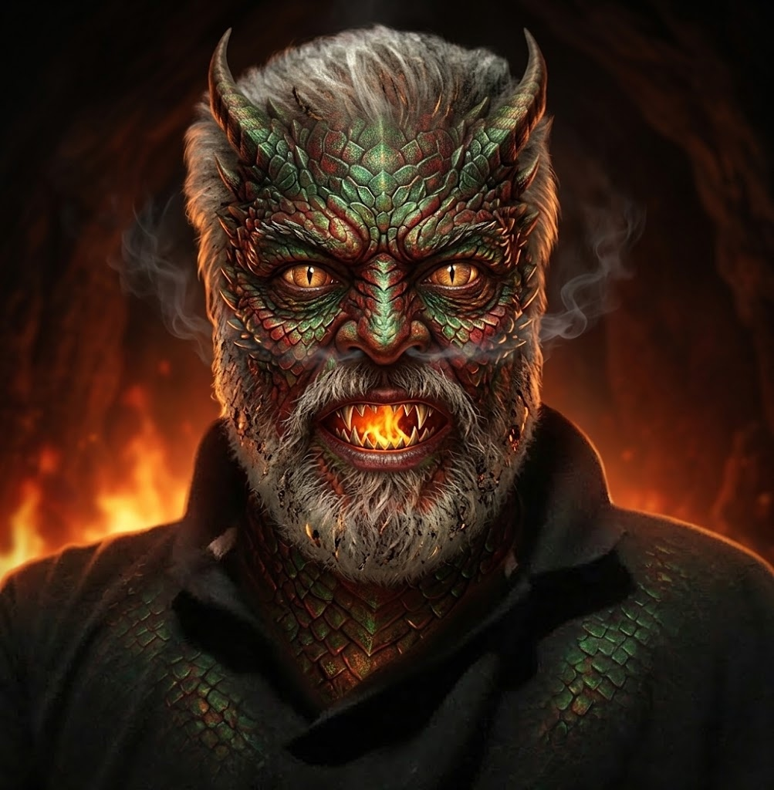
DESPUÉS: ¡Resultado del hechizo!
💡 Consejo del Hechicero: Usá una foto con buena iluminación y fondo claro. ¡Funciona mejor con la cara mirando de frente!
🧪 Caldero de Ingredientes
🌕Pelo de lobo lunar
💨Aullido de medianoche
🐾Garra del bosque oscuro
🗣️ Conjuro Mágico
"¡Lupinus Transformatum! ¡La luna llena te reclama!"
[1. Estilo] Una obra de arte digital de terror y fantasía cinematográfica...
[2. Identidad] ...que transforma a la persona de la imagen en un hombre lobo, preservando de manera estricta sus rasgos faciales exactos, su edad y su identidad reconocible bajo la transformación.
[3. Mutación] La persona conserva su estructura facial natural, contextura y expresión mientras su cabello se vuelve salvaje, mezclándose con un pelaje áspero grisáceo y marrón que cubre mejillas y frente. Su rostro se adapta a una fisonomía híbrida con hocico canino, nariz húmeda, ojos ámbar salvajes bajo cejas pobladas, boca con colmillos afilados y orejas puntiagudas de lobo en la cabeza.
[4. Vestuario] Lleva su misma ropa oscura desabrochada, ligeramente desgastada y rasgada por la transformación, con manos de garras afiladas en su postura original.
[5. Entorno] Fondo de bosque oscuro en una noche tormentosa de gran dramatismo bajo una luna llena entre nubes densas de lluvia, con intensa luz plateada cinematográfica, sombras profundas y niebla.
✨ Metamorfosis Visual: Foto Base ➔ Transformación con IA
ANTES: Foto original
➔
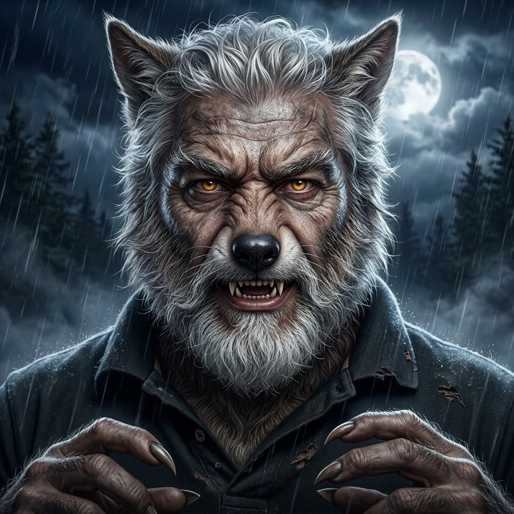
DESPUÉS: ¡Resultado del hechizo!
💡 Consejo del Hechicero: ¡Mantené la cara visible y bien iluminada! El hechizo es más poderoso en noches de luna llena.
🧪 Caldero de Ingredientes
⚰️Polvo de tumba centenaria
🪦Tierra de camposanto
👻Suspiro del más allá
🗣️ Conjuro Mágico
"¡Mortuus Vivificatum! ¡Despierta entre los muertos!"
[1. Estilo] Una ilustración cinematográfica de horror gótico y terror realista...
[2. Identidad] ...que transforma a la persona de la imagen en un no-muerto resucitado, preservando estrictamente su fisonomía facial, su edad y sus facciones reconocibles.
[3. Mutación] La persona conserva su estructura facial bajo una piel pálida verdosa en descomposición con sutiles marcas de tierra y venas oscuras. Sus ojos brillan con un resplandor verde sobrenatural, sus labios resecos muestran dientes oscurecidos y su cabello despeinado lleva pequeñas hojas secas adheridas.
[4. Vestuario] Viste su ropa oscura original rasgada y manchada con polvo de camposanto y jirones envejecidos, manteniendo su postura natural.
[5. Entorno] Fondo oscuro de un cementerio antiguo con lápidas de piedra agrietadas entre niebla espesa y árboles secos, con iluminación verde espeluznante y sombras lúgubres. Primer plano, hiperdetallado.
✨ Metamorfosis Visual: Foto Base ➔ Transformación con IA
ANTES: Foto original
➔
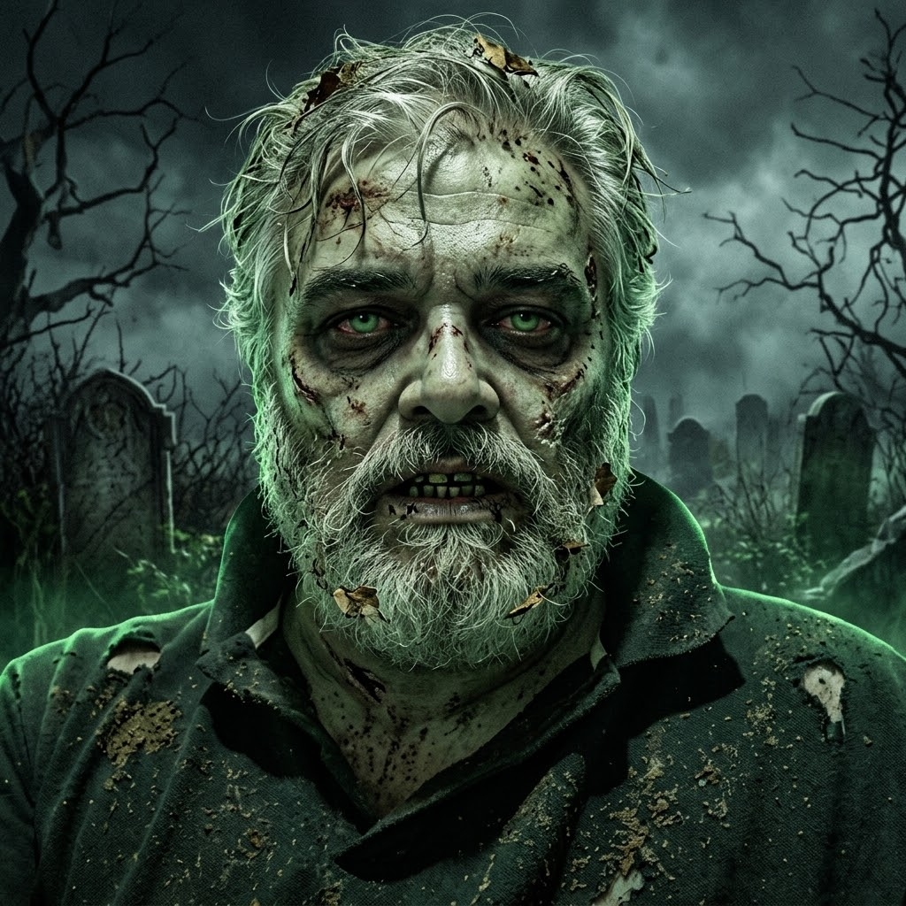
DESPUÉS: ¡Resultado del hechizo!
💡 Consejo del Hechicero: ¡Cuidado! Este hechizo es muy poderoso. Mantené la mirada fija al frente.
🧪 Caldero de Ingredientes
🦇Capa de murciélago nocturno
🥀Rosa negra marchita
🩸Gota de sangre carmesí
🗣️ Conjuro Mágico
"¡Vampirus Metamorphus! ¡La oscuridad te adopta por siempre!"
[1. Estilo] Una obra de arte digital de terror gótico y fantasía cinematográfica...
[2. Identidad] ...que transforma a la persona de la imagen en un vampiro de la noche, preservando de manera estricta sus rasgos faciales exactos, su edad y su identidad reconocible.
[3. Mutación] La persona conserva su estructura facial auténtica y mirada natural con cabello peinado hacia atrás. Su piel se vuelve muy pálida y fría como porcelana, sus ojos brillan en rojo carmesí con sombras oscuras debajo, cejas arqueadas dramáticas y colmillos afilados con un fino hilo de sangre en la comisura.
[4. Vestuario] Lleva una elegante capa oscura de cuello alto con intrincados bordados góticos sobre su cuello original, manteniendo su porte y postura natural.
[5. Entorno] Fondo del interior de un castillo gótico con pilares de piedra, velas parpadeantes, murciélagos lejanos y luz de luna plateada mezclada con sombras púrpuras dramáticas. Primer plano, muy detallado.
✨ Metamorfosis Visual: Foto Base ➔ Transformación con IA
ANTES: Foto original
➔
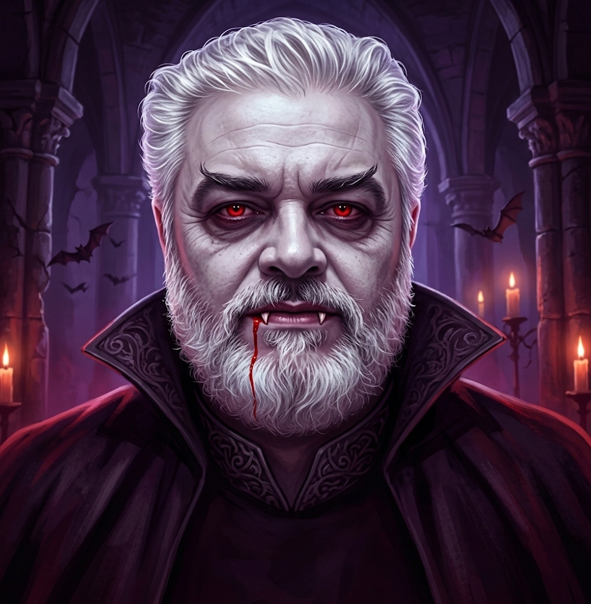
DESPUÉS: ¡Resultado del hechizo!
💡 Consejo del Hechicero: Los vampiros odian la luz del sol. Usá una foto en interiores para el mejor efecto.
🧪 Caldero de Ingredientes
🏛️Piedra del Olimpo antiguo
🪨Roca de magma agrietada
⚡Visión dorada de los titanes
🗣️ Conjuro Mágico
"¡Monocularis Gigantum! ¡Que un solo ojo vea todo el mundo!"
[1. Estilo] Una obra de arte digital de fantasía y mitología clásica a gran escala...
[2. Identidad] ...que transforma a la persona en un Cíclope gigante de la mitología griega, preservando de manera estricta su rostro reconocible, su edad y su identidad.
[3. Mutación] La persona conserva su estructura facial natural sobre una mandíbula más ancha y masiva. Su piel se vuelve gris-azulada, gruesa y agrietada como piedra antigua. En el centro de la frente sus ojos se funden en un único y colosal ojo dorado brillante bajo una ceja salvaje, con nariz ancha y pequeñas protuberancias rocosas en sienes.
[4. Vestuario] Viste una túnica rústica de cuero y tela desgastada sobre sus anchos hombros, manteniendo la postura natural en primer plano.
[5. Entorno] Fondo épico de ruinas griegas en lo alto de una montaña bajo cielo tormentoso nocturno con relámpagos lejanos, e iluminación que resalta la textura rocosa. Primer plano, muy detallado.
✨ Metamorfosis Visual: Foto Base ➔ Transformación con IA
ANTES: Foto original
➔
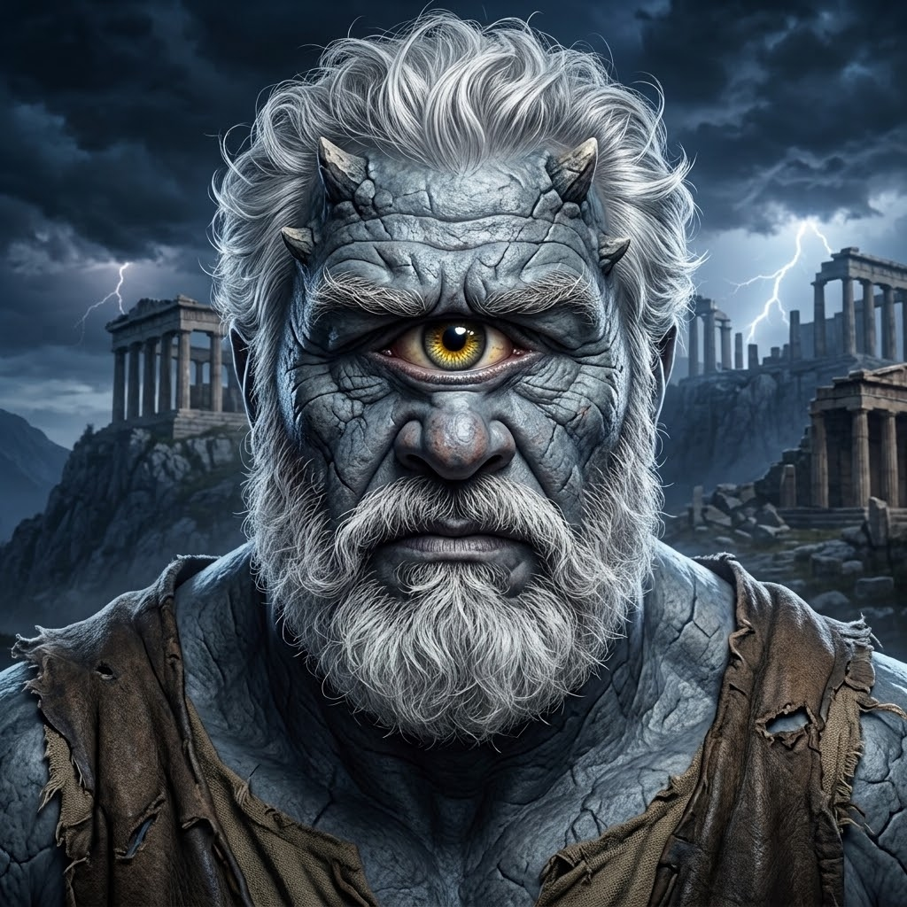
DESPUÉS: ¡Resultado del hechizo!
💡 Consejo del Hechicero: Usá una foto de frente para que el hechizo funcione perfectamente. ¡El gran ojo lo ve todo!
🧪 Caldero de Ingredientes
🐾Garra de la fiera del abismo
🌋Rugido de caverna profunda
🦏Cuerno de bestia ancestral
🗣️ Conjuro Mágico
"¡Ferox Bestiarium! ¡Que la bestia interior despierte!"
[1. Estilo] Una ilustración cinematográfica de fantasía oscura y terror...
[2. Identidad] ...que transforma a la persona de la imagen en una imponente bestia feroz, conservando estrictamente su rostro natural, su edad y su fisonomía auténtica.
[3. Mutación] Su piel se vuelve de cuero áspero rojizo-marrón con escamas y protuberancias manteniendo sus facciones reales. Tiene ojos naranja demoníacos brillantes, dos cuernos cortos en la frente, orejas puntiagudas y boca abierta en un leve gruñido que muestra colmillos en la mandíbula.
[4. Vestuario] Viste su ropa oscura o atuendo rústico desgastado en su postura original, con cuello musculoso y hombros firmes.
[5. Entorno] Fondo oscuro de bosque salvaje tormentoso con densa niebla roja brillante y luz de luna filtrada entre ramas. Muy detallado, primer plano.
✨ Metamorfosis Visual: Foto Base ➔ Transformación con IA
ANTES: Foto original
➔
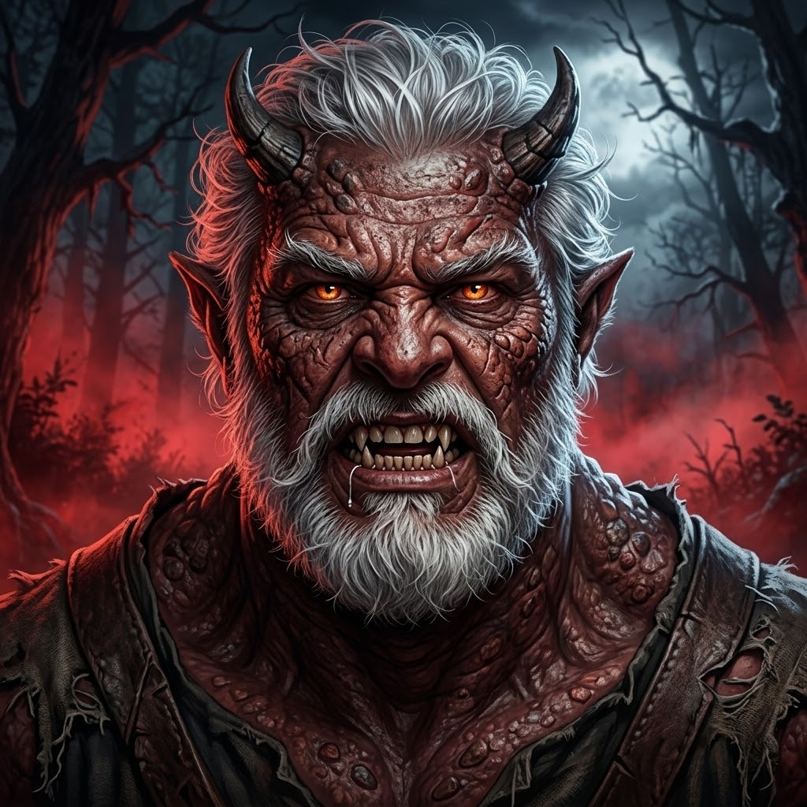
DESPUÉS: ¡Resultado del hechizo!
💡 Consejo del Hechicero: Cuanto más expresiva sea la foto, más fiero quedará el resultado. ¡La bestia duerme en tu interior!
🧪 Caldero de Ingredientes
🧪Veneno de víbora antigua
👁️Mirada petrificante de piedra
🐍Escama dorada de Gorgona
🗣️ Conjuro Mágico
"¡Gorgonis Metamorphus! ¡Que las serpientes coronen tu cabeza!"
[1. Estilo] Una ilustración cinematográfica de fantasía mitológica y terror clásico...
[2. Identidad] ...que transforma a la persona de la imagen en una versión de Medusa, conservando estrictamente su rostro natural, su edad y sus facciones reconocibles.
[3. Mutación] Su cabello se transforma en docenas de serpientes vivas ondulantes de tonos verdes, dorados y grises. Su piel adquiere un tono verde-grisáceo con sutiles escamas en mejillas manteniendo sus arrugas reales, con ojos de intensa luz dorada-verde petrificante y lengua bífida visible.
[4. Vestuario] Viste un ropaje antiguo o túnica griega rústica deshilachada sobre los hombros, en su postura original.
[5. Entorno] Fondo oscuro de ruinas de un templo griego bajo cielo tormentoso nocturno con relámpagos lejanos y luz de luna fría. Muy detallado, primer plano.
✨ Metamorfosis Visual: Foto Base ➔ Transformación con IA
ANTES: Foto original
➔
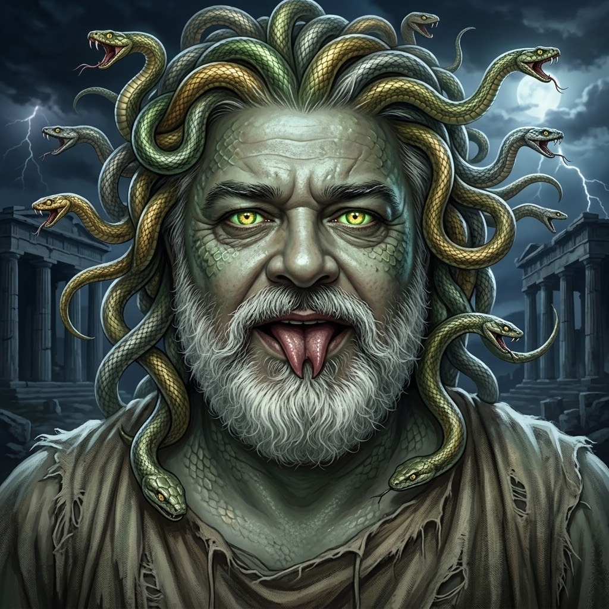
DESPUÉS: ¡Resultado del hechizo!
💡 Consejo del Hechicero: Usá una foto donde se vea bien el cabello para mejores resultados. ¡Cuidado con su mirada de piedra!
🧪 Caldero de Ingredientes
⚡Rayo de tormenta eléctrica
🔩Tuerca de acero oxidado
🧵Hilo quirúrgico centenario
🗣️ Conjuro Mágico
"¡Electrus Reanimatum! ¡Que la electricidad te dé vida!"
[1. Estilo] Una ilustración cinematográfica de terror gótico clásico...
[2. Identidad] ...que transforma a la persona de la imagen en la criatura de Frankenstein, conservando estrictamente su rostro natural, su edad y su fisonomía auténtica.
[3. Mutación] Su estructura facial se mantiene bajo una piel gris-verde enfermiza con suturas, grapas y cicatrices visibles. Su frente se aplana con una cicatriz cosida horizontal, dos pernos de metal oxidados sobresalen a los lados de su cuello, mandíbula cuadrada y párpados pesados con ojeras oscuras.
[4. Vestuario] Viste un abrigo oscuro y desgastado de época sobre su prenda original, manteniendo su posición y postura frontal.
[5. Entorno] Fondo de un laboratorio gótico de piedra con bobinas eléctricas que chispean, altas ventanas y relámpagos en una noche de tormenta eléctrica. Primer plano, hiperdetallado.
✨ Metamorfosis Visual: Foto Base ➔ Transformación con IA
ANTES: Foto original
➔
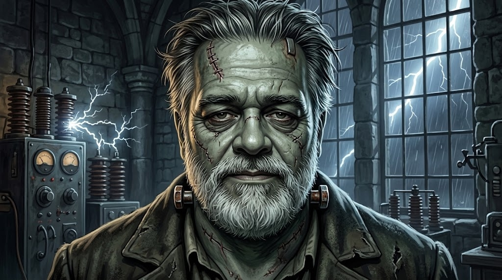
DESPUÉS: ¡Resultado del hechizo!
💡 Consejo del Hechicero: ¡VIVE! Usá una foto de frente para alinear bien las costuras y los pernos del cuello.
🧪 Caldero de Ingredientes
✨Polvo de nebulosa estelar
💎Cristal cósmico ultravioleta
📡Frecuencia del espacio profundo
🗣️ Conjuro Mágico
"¡Alienigena Transformum! ¡Las estrellas te reclaman!"
[1. Estilo] Una ilustración cinematográfica de ciencia ficción y fantasía cósmica...
[2. Identidad] ...que transforma a la persona de la imagen en una criatura alienígena, conservando estrictamente su rostro natural, su edad y su identidad reconocible.
[3. Mutación] Su cabeza se vuelve sutilmente más alargada hacia atrás manteniendo su fisonomía. Su piel es suave, azul-grisácea y translúcida con venas tenues y sutil brillo bioluminiscente, enormes ojos almendrados completamente negros y brillantes, nariz reducida a sutiles ranuras y boca fina.
[4. Vestuario] Viste su prenda oscura original combinada con un traje espacial orgánico de cuello estilizado, manteniendo su postura frontal.
[5. Entorno] Fondo del espacio profundo con nebulosas cósmicas en tonos turquesa y violeta, estrellas lejanas y suave iluminación extraterrestre. Muy detallado, primer plano.
✨ Metamorfosis Visual: Foto Base ➔ Transformación con IA
ANTES: Foto original
➔
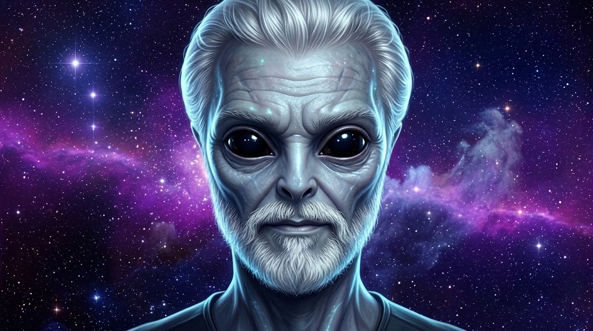
DESPUÉS: ¡Resultado del hechizo!
💡 Consejo del Hechicero: Usá una foto bien iluminada. ¡Los alienígenas prefieren el misterio del espacio profundo!
🧪 Caldero de Ingredientes
🔥Fuego del inframundo eterno
🦏Cuerno de demonio anciano
🌋Ceniza de azufre y piedra
🗣️ Conjuro Mágico
"¡Daemonicus Maximus! ¡Las llamas del inframundo te transforman!"
[1. Estilo] Una ilustración cinematográfica de fantasía oscura y terror en plano medio...
[2. Identidad] ...que transforma a la persona de la imagen en un poderoso demonio del inframundo, preservando de manera estricta sus rasgos faciales exactos, su edad y su identidad reconocible.
[3. Mutación] La persona conserva su fisonomía bajo una piel rojo carmesí oscuro rugosa con venas marcadas. De su frente crecen dos grandes cuernos negros curvados y ásperos, sus ojos brillan en amarillo ardiente con pupilas de ranura vertical, orejas puntiagudas y sonrisa con colmillos afilados.
[4. Vestuario] Lleva su misma ropa oscura rasgada por la transformación, con cuello musculoso y pequeñas brasas y chispas flotando sobre los hombros en su postura original.
[5. Entorno] Fondo de un abismo infernal con un portal antiguo de roca negra del que emana lava ardiente, humo denso y cenizas flotantes, con iluminación de fuego lateral. Primer plano, muy detallado.
✨ Metamorfosis Visual: Foto Base ➔ Transformación con IA
ANTES: Foto original
➔
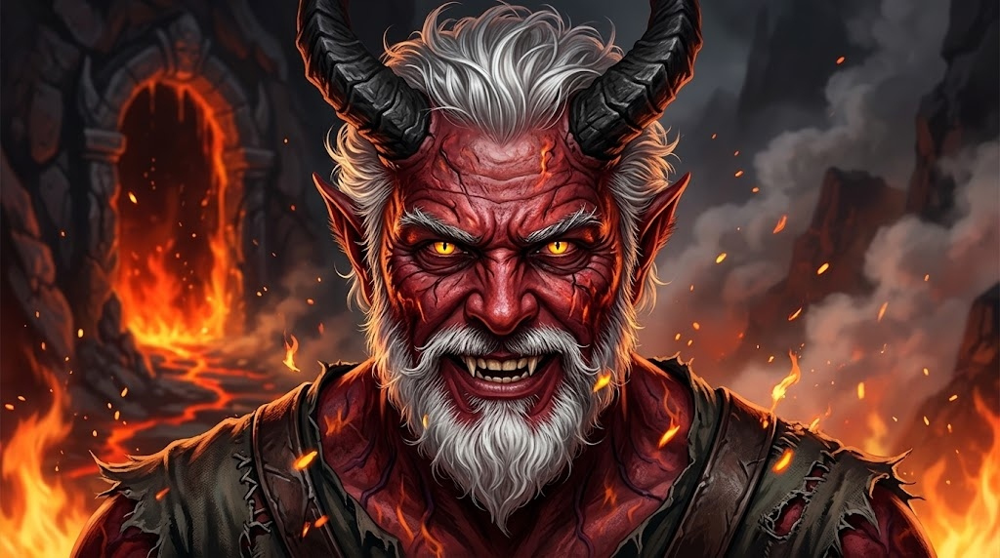
DESPUÉS: ¡Resultado del hechizo!
💡 Consejo del Hechicero: ¡Solo para los más valientes! Usá una foto frontal para que los cuernos emerjan perfectamente.
🧪 Caldero de Ingredientes
🎨Pigmento óseo y carbón
🎃Luz de calabaza espectral
🌫️Niebla de camposanto
🗣️ Conjuro Mágico
"¡Ossium Cinematographicus! ¡La calavera de ultratumba despierta!"
[1. Estilo] Una fotografía cinematográfica y fotorrealista (fotograma de película de misterio de 35mm)...
[2. Identidad] ...que captura a la persona de la imagen con maquillaje artístico de esqueleto, conservando estrictamente su rostro natural, su edad y sus facciones reconocibles.
[3. Mutación] Su fisonomía y arrugas se mantienen bajo un elaborado maquillaje SFX de calavera: cuencas de los ojos y punta de nariz en negro mate profundo, pómulos y mandíbula sombreados para acentuar el hueso, y líneas de dientes pintadas con precisión sobre los labios.
[4. Vestuario] Viste un saco o chaqueta oscura, desgastada y rústica con cuello levantado, manteniendo su postura natural.
[5. Entorno] Fondo de un cementerio antiguo bajo niebla baja iluminada por calabazas de Halloween a lo lejos y una gran luna llena brillante. Grano cinematográfico de 35mm, fotorrealista.
✨ Metamorfosis Visual: Foto Base ➔ Transformación con IA
ANTES: Foto original
➔
DESPUÉS: ¡Resultado del hechizo!
💡 Consejo del Hechicero: ¡Especial de Halloween! Con una iluminación suave, el contraste del maquillaje de calavera queda espectacular.
🧪 Caldero de Ingredientes
🌌Ectoplasma lunar translúcido
🏚️Niebla de mansión abandonada
💨Suspiro del más allá
🗣️ Conjuro Mágico
"¡Phantasma Aeternum! ¡Que tu cuerpo se vuelva etéreo y luminoso!"
[1. Estilo] Una fotografía cinematográfica y fotorrealista (fotograma de película de misterio)...
[2. Identidad] ...que captura la aparición espectral y fantasmal de la persona, preservando de manera estricta su rostro natural, su edad y su fisonomía reconocible.
[3. Mutación] Todo su cuerpo es semitransparente y etéreo en tono azul-grisáceo espectral, desvaneciéndose en los bordes con un tenue brillo bioluminiscente. Sus ojos brillan con una fría luz sobrenatural blanco-azulada desde el interior con expresión contemplativa y serena.
[4. Vestuario] Viste una versión fantasmal y desvaída de su ropa oscura que se desintegra en niebla hacia abajo, levitando suavemente en su postura original.
[5. Entorno] Fondo nocturno de una casa abandonada de madera entre árboles retorcidos y niebla baja, iluminada por una fría luz de luna. Grano sutil de 35mm, fotorrealista.
✨ Metamorfosis Visual: Foto Base ➔ Transformación con IA
ANTES: Foto original
➔
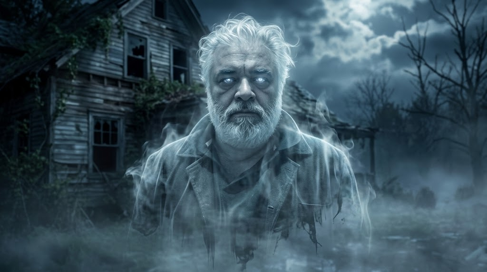
DESPUÉS: ¡Resultado del hechizo!
💡 Consejo del Hechicero: ¡Un fotograma espectral! Cuanto más frontal y sereno el rostro, más hipnóticos lucen los ojos bioluminiscentes.
🧪 Caldero de Ingredientes
🩹Vendas de lino milenario
⏳Arena dorada del desierto
🔥Fuego sagrado de antorcha
🗣️ Conjuro Mágico
"¡Mumia Exsurgat! ¡Las arenas del tiempo te envuelven!"
[1. Estilo] Un fotograma cinematográfico fotorrealista de primer plano de Halloween...
[2. Identidad] ...que captura a la persona de la imagen como una antigua momia egipcia, conservando estrictamente su rostro natural, su edad y sus facciones reconocibles.
[3. Mutación] Vendas de lino antiguas y deshilachadas envuelven cabeza y cuello, dejando al descubierto el centro de su rostro: ojos, nariz y boca con sus líneas de expresión intactas, con sutil brillo dorado en la mirada entre polvo y sombras.
[4. Vestuario] Viste las vendas centenarias deshechas combinadas con jirones de tela rústica oscura de época sobre los hombros, en su postura original.
[5. Entorno] Fondo nocturno desenfocado de la base de una pirámide egipcia entre dunas, iluminada por antorchas parpadeantes, humo y fría luz de luna en tormenta de arena. Grano de 35mm.
✨ Metamorfosis Visual: Foto Base ➔ Transformación con IA
ANTES: Foto original
➔
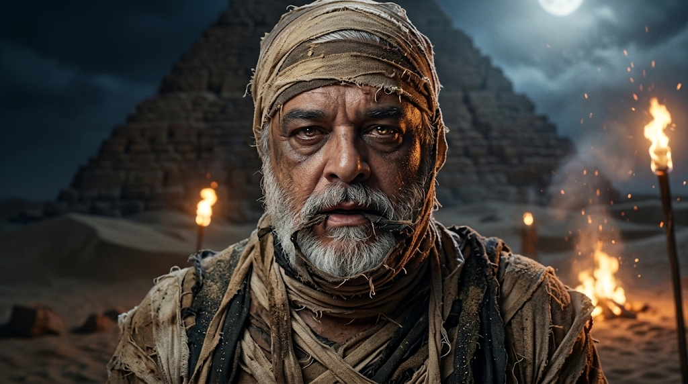
DESPUÉS: ¡Resultado del hechizo!
💡 Consejo del Hechicero: ¡Texturas del desierto! Una foto bien centrada permite que los vendajes enmarquen los ojos con misterio y realismo.
🧪 Caldero de Ingredientes
🎃Corteza de calabaza encantada
🕯️Llama de vela de Jack-o'-Lantern
🌿Enredaderas del huerto oscuro
🗣️ Conjuro Mágico
"¡Cucurbita Vivificatum! ¡El fuego del huerto arde en tu interior!"
[1. Estilo] Un fotograma cinematográfico fotorrealista y de primer plano...
[2. Identidad] ...que captura a la persona de la imagen transformada en un misterioso guardián de calabaza, conservando estrictamente su rostro natural, su edad y sus facciones reconocibles.
[3. Mutación] Su piel adquiere textura estriada de corteza de calabaza en tonos terrosos y anaranjados, manteniendo su fisonomía. Sus ojos y boca brillan desde el interior con una cálida y ardiente luz de Jack-o'-Lantern, con ramas secas y enredaderas brotando entre su cabello.
[4. Vestuario] Viste un atuendo rústico y oscuro cubierto de hojas marchitas de calabaza y enredaderas entrelazadas en su postura original.
[5. Entorno] Fondo de un campo de calabazas nocturno cubierto por densa niebla baja, bajo la luz de una gran luna llena y calabazas encendidas a lo lejos. Grano de 35mm, fotorrealista.
✨ Metamorfosis Visual: Foto Base ➔ Transformación con IA
ANTES: Foto original
➔
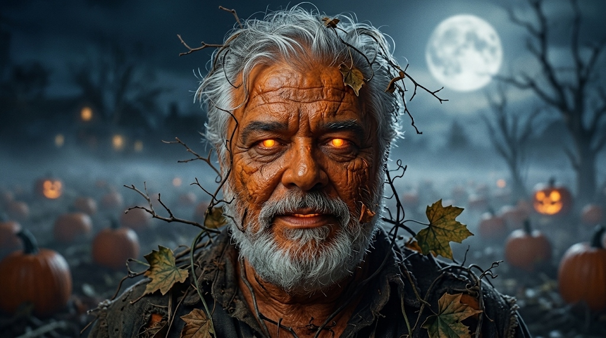
DESPUÉS: ¡Resultado del hechizo!
💡 Consejo del Hechicero: ¡Pura esencia de Halloween! Los ojos ardientes y las ramas entretejidas crean un efecto orgánico impresionante.
COLEGIO PAULO FREIRE
🌙
Fin del Grimorio
Los 14 hechizos han sido revelados.
A través de este grimorio, los alumnos aprenden que la Inteligencia Artificial no es magia misteriosa, sino una disciplina creativa que responde a la precisión de nuestro lenguaje, la estructura de nuestras ideas y la potencia de nuestra imaginación.
✦ ✦ ✦